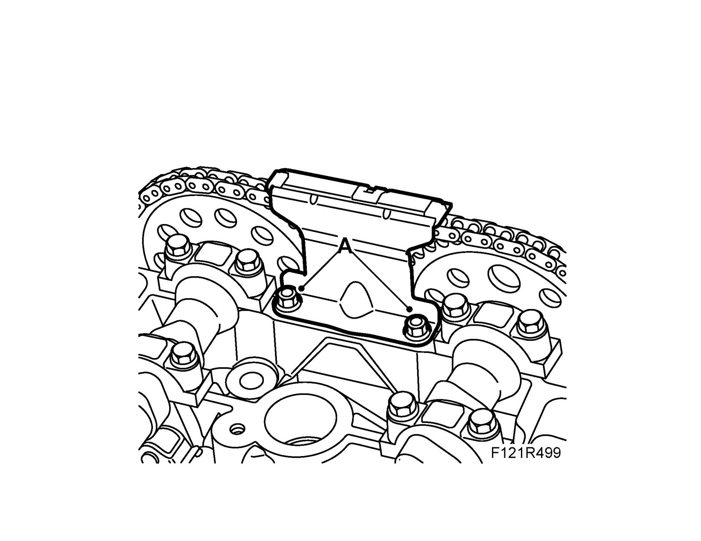

Camshaft Chain Guide, Upper, B207
Camshaft chain guide, upper, B207To remove
1. Remove the Camshaft cover with gasket
2. Remove the upper chain guide (A).

To fit
1. Fit the upper chain guide (A).

2. Fit the Camshaft cover with gasket
